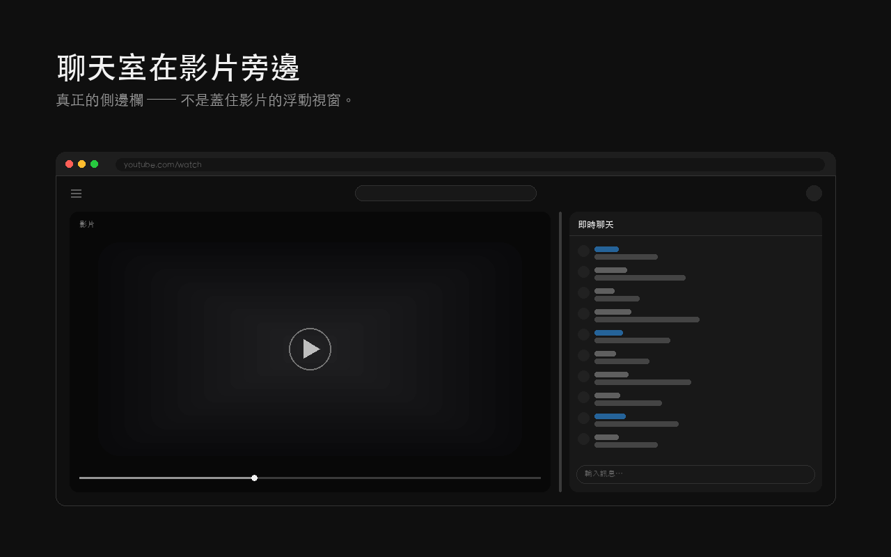
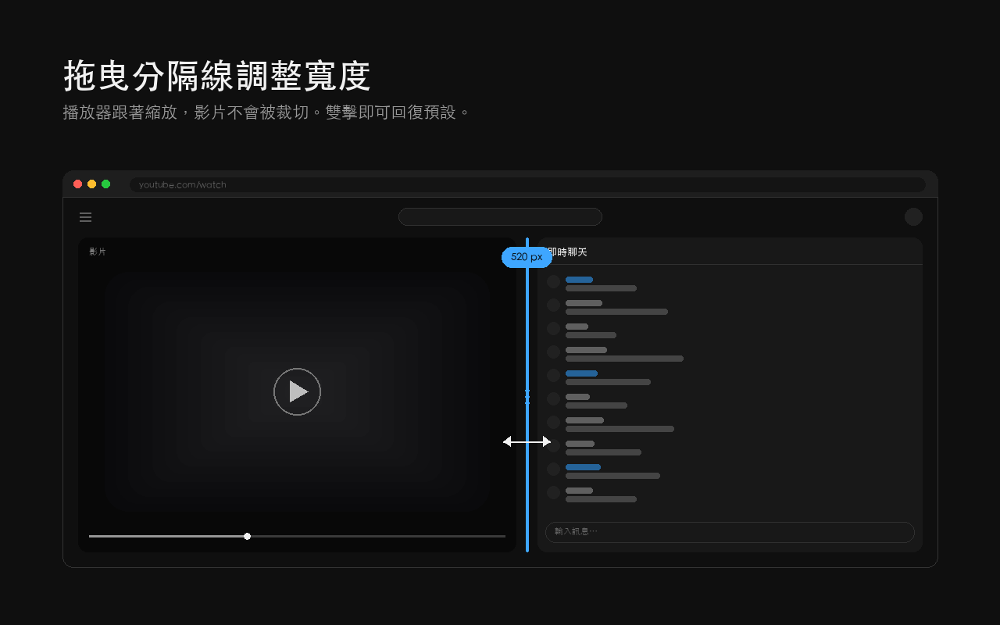
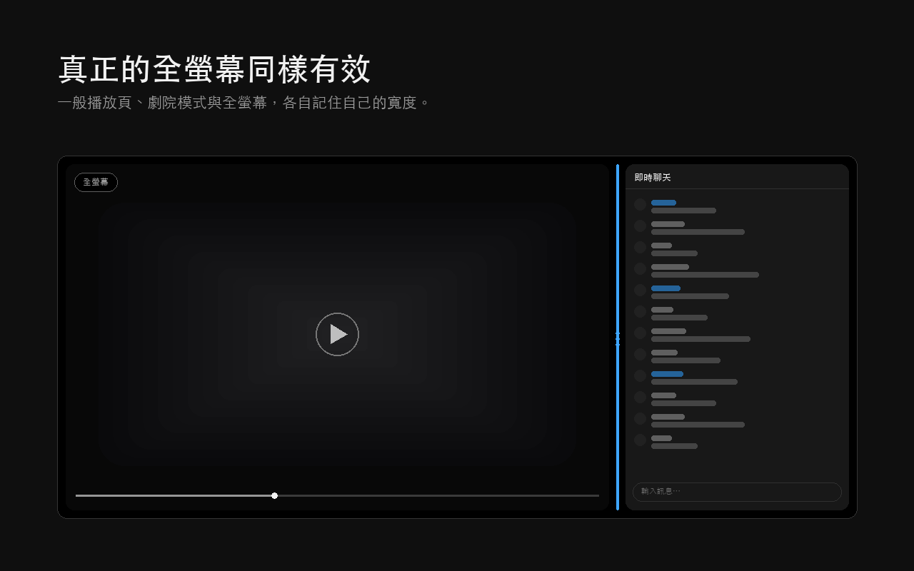
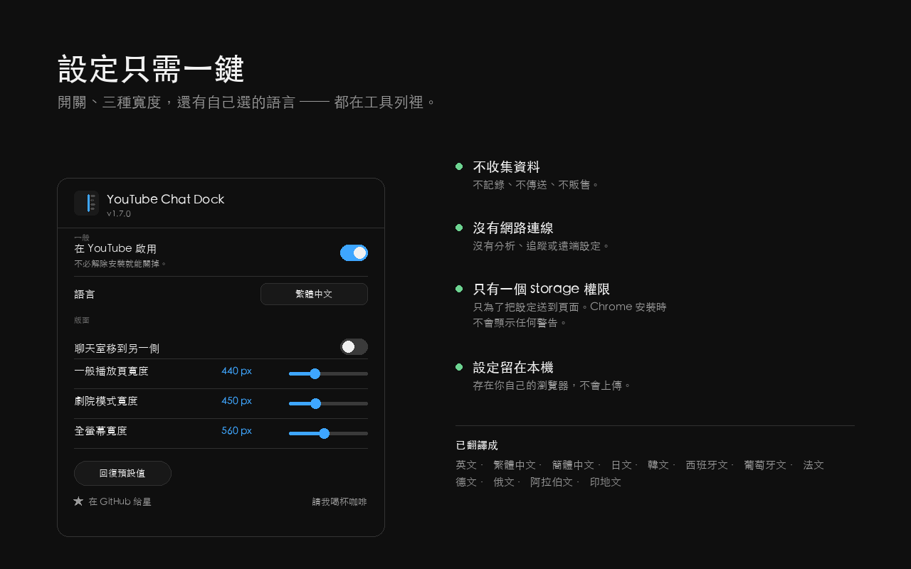

| 擴充功能版本 | 2.0.2 |
|---|---|
| 價格與授權 | 免費、開放原始碼，採 MIT 授權 |
| 適用內容 | YouTube 既有直播聊天室與聊天重播；不會替沒有聊天室的影片建立聊天 |
| 顯示模式 | 一般播放頁、劇院模式與真正全螢幕，各自保存寬度 |
| 視窗要求 | 使用分隔線需至少 1000 CSS 像素可視寬度；聊天室最窄 120 CSS 像素，上限依可用空間而定 |
此為已錄製的示範；使用條件與限制請參閱常見問題。

怎樣讓 YouTube 直播聊天室排在影片旁邊？
從 Chrome 線上應用程式商店安裝 YouTube Chat Dock，重新載入 YouTube，再開啟有直播聊天室或聊天重播的影片。在至少 1000 CSS 像素寬的桌面可視區域中，拖曳分隔線即可調整影片旁既有聊天室的寬度。
YouTube Chat Dock 只是把頁面上原本就有的聊天室重新排版，所以它仍然是 YouTube 自己的聊天室，Super Chat、表情符號、管理工具、會員徽章全部照常運作。沒有任何東西被重寫，也沒有任何東西經過中轉。改變的只有聊天室放在哪裡、以及有多寬。
YouTube 的直播聊天室可以調整寬度嗎？
可以，拖曳影片與聊天室之間的分隔線就行。一般播放頁、劇院模式與全螢幕各自記住自己的寬度，所以切到全螢幕不會弄亂你的版面。
- 拖曳分隔線，寬度最窄可到 120 CSS 像素，上限依可用視窗空間而定。
- 雙擊分隔線即可回復預設寬度。
- 也可以聚焦分隔線後用方向鍵調整，Shift 是大幅度，Home 與 End 直接到最小與最大。
- 把滑鼠移到分隔線上按左右切換，或使用工具列設定面板，即可換邊；選擇會保存。
- 或者用工具列設定面板的滑桿，拖動時畫面會即時跟著變。

為什麼劇院模式下沒辦法調整聊天室的寬度？
YouTube 原生劇院模式的聊天室寬度由 YouTube 決定。YouTube Chat Dock 加入可拖曳的分隔線，讓你調整聊天室寬度，播放器也會配合縮放。使用分隔線需要至少 1000 CSS 像素的可視寬度。
YouTube 以前的做法不一樣：它會把播放器收窄、在旁邊預留一格空位，然後把那格留空，改把聊天室排到影片下方 —— 「劇院模式聊天室跑到影片下面」的說法就是這樣來的。那個版面在擴充功能開啟與關閉時量起來完全一樣，所以從來就不是擴充功能造成的。後來 YouTube 改掉了：在 1920×769 下實測兩個直播與一個聊天重播，聊天室都固定在播放器旁邊，捲動時也留在原處，推薦影片會從它下面捲過去。這個擴充功能跟著 YouTube 目前的版面走，除了寬度以外什麼都不改。
全螢幕的時候還能看聊天室嗎？
YouTube Chat Dock 可在真正全螢幕下，將既有 YouTube 直播聊天室與聊天重播排在影片旁邊。拖曳分隔線可調整聊天室寬度，播放器會配合縮放而不裁切影片。全螢幕會獨立記住自己的寬度。
完整教學：YouTube 直播全螢幕時，如何讓聊天室留在影片旁邊

舊直播的聊天重播也適用嗎？
適用。YouTube Chat Dock 可在本身提供聊天重播的過往直播中，並排及調整聊天室寬度；不會還原已停用或不存在的聊天重播。
為什麼切到全螢幕之後聊天重播會變成一片空白？
YouTube 的聊天重播可能在切換全螢幕後停滯，造成空白，即使沒有安裝擴充功能也可能發生。YouTube Chat Dock 偵測這類特定停滯後，會重新選取目前聊天模式以嘗試恢復；它不是所有空白聊天室或網路問題的通用修復。
實測卡住的重播：訊息清單裡只剩一則 YouTube 自己的提示，而面板尺寸正常、完全可見，影片也照常播放，從外面看根本不像壞掉。重新載入聊天框架沒有用，因為那個框架握著一個已經失效的 token；在聊天室標題列重新選一次模式才有用，因為 YouTube 會去拿一個新的 token 重建清單。這個擴充功能重選的是「現在已經選著」那一個，所以熱門聊天重播仍然是熱門聊天重播。你也可以在設定面板把它關掉。
可以把聊天室移到左邊嗎？
可以。把滑鼠移到分隔線上按左右切換，或使用工具列設定面板；選擇會保存。YouTube Chat Dock 2.0.2 已修復 YouTube 新固定側欄一般頁面版型的換邊問題，包含由右至左的版面。
有哪些設定？
設定面板提供 docking 開關、聊天重播修復、滑鼠停留暫停、語言、左右切換、三個寬度滑桿及重設。docking 開關控制版面與分隔線；滑鼠停留暫停及重播修復各有獨立開關。
| 設定 | 作用 |
|---|---|
| 在 YouTube 啟用 | 不必解除安裝就能關掉側邊欄 |
| 修復空白的聊天重播 | 聊天重播在全螢幕卡住時自動重新啟動 |
| 語言 | 12 種任選，與瀏覽器的語言無關 |
| 聊天室移到另一側 | 與分隔線上的 ⇆ 按鈕相同 |
| 三個寬度滑桿 | 一般播放頁、劇院模式與全螢幕，拖動時即時預覽 |
| 回復預設值 | 全部還原 |
| 滑鼠停留時暫停聊天室 | 滑鼠移到訊息清單上時把它固定住 |

YouTube Chat Dock 會收集資料嗎？
擴充功能沒有自動資料收集、分析、遙測或遠端設定；設定保存在本機。若你主動開啟外部意見回饋表單，網址會包含擴充功能版本及所選介面語言；是否提交回饋由你決定。
- 沒有自動資料收集或販售；自願提交的回饋另外處理
- 擴充功能沒有自動連線、分析或遙測
- 沒有背景執行的 service worker；不在 YouTube 時完全不會執行
- 不需要帳號、不需要登入、沒有雲端同步
- 沒有 host 權限 —— 只能在
youtube.com上運作，其他地方一概不行 - 只有一個
storage權限，而 Chrome 安裝時不會為它跳出任何提示
那唯一的 storage 權限存在的理由只有一個：設定面板是獨立的擴充功能頁面，否則沒有辦法把你的選擇傳到它正在設定的那個分頁。完整政策：store/PRIVACY.md。擴充功能由一份樣式表、四支內容腳本及工具列設定面板組成，採 MIT 授權，沒有執行時相依套件。
Edge、Brave、Opera、Arc 可以用嗎？
YouTube Chat Dock 以桌面版 Chrome 105 以上及相容的 Chromium 瀏覽器為目標，包括 Edge、Brave、Opera、Vivaldi、Arc；未逐一獨立驗證各瀏覽器現行版本。它不是 Firefox 附加元件。
它發布在 Chrome 線上應用程式商店，Edge 與其他 Chromium 瀏覽器都可以直接從那裡安裝。它不是 Firefox 附加元件。
支援哪些語言？
12 種：English、繁體中文、简体中文、日本語、한국어、Español、Português、Français、Deutsch、Русский、العربية、हिन्दी。
介面語言可獨立於瀏覽器語言選擇，並支援由右至左版面。
有什麼限制？
使用分隔線需要至少 1000 CSS 像素的可視寬度。清除 YouTube 網站資料只會移除首次繪製用的設定副本，擴充功能儲存區仍可還原設定；要重設請使用設定面板的回復預設值。
- 可視寬度低於 1000 CSS 像素。分隔線會隱藏；一般頁面與劇院模式的寬度規則亦需要至少此寬度。滑鼠停留暫停是獨立功能。
- 本機設定。YouTube 的 localStorage 提供首次繪製值；清除網站資料後 chrome.storage.local 仍可還原設定。要重設請使用設定面板的回復預設值。
怎樣安裝？
從 Chrome 線上應用程式商店安裝 YouTube Chat Dock，重新載入已開啟的 YouTube 分頁，再開啟有直播聊天室或聊天重播的影片。展開聊天室後即可拖曳分隔線；桌面可視寬度需至少 1000 CSS 像素。
從商店安裝
加到 Chrome，然後重新載入 YouTube 分頁。Chrome 不會要你同意任何東西。
從原始碼安裝
複製這個 repo，開啟 chrome://extensions/，打開開發人員模式，按「載入未封裝項目」並選擇該資料夾。不需要建置，也沒有任何依賴。
看訊息的時候可以讓聊天室不要一直捲動嗎？
可以。把滑鼠移到訊息清單上，它就會停在原地，所以就算聊天很快，你在讀訊息或點連結的時候它也不動。新訊息會繼續在下面進來；把滑鼠移開就跳回即時。這是滑鼠專用的 —— 觸控螢幕沒有滑鼠停留，所以那時是靠 YouTube 自己的往上捲動暫停。工具列的設定面板裡有一個開關。